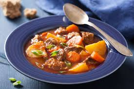

Ensopado de Carne
Ingrdientes
- 1 kg de carne bovina (corte de sua preferência, como acém ou músculo)
- 2 litros de caldo de carne
- 2 cebolas grandes picadas
- 4 dentes de alho picados
- 3 cenouras cortadas em rodelas
- 2 nabos cortados em cubos
- 1 talo de aipo picado
- 2 colheres de sopa de azeite de oliva
- 1 colher de chá de pimenta preta moída
- 1 colher de chá de cominho em pó
- 2 folhas de louro
- Sal a gosto
- Ervas frescas (como tomilho e salsa) para temperar
Modo de preparo
- Preparação da Carne:
- Corte a carne em cubos médios.
- Em uma panela grande, aqueça o azeite de oliva.
- Adicione a carne e doure bem todos os lados. Retire a carne da panela e reserve.
- Refogar os Ingredientes:
- Na mesma panela, adicione a cebola e o alho picados. Refogue até ficarem dourados e fragrantes.
- Adicione as cenouras, nabos e aipo. Cozinhe por alguns minutos, mexendo ocasionalmente.
- Adicionar Caldo e Temperos:
- Retorne a carne dourada à panela.
- Adicione o caldo de carne, as folhas de louro, a pimenta preta, o cominho e o sal. Mexa bem.
- Deixe ferver, reduza o fogo e cozinhe em fogo baixo por cerca de 1,5 a 2 horas, ou até que a carne esteja macia e os legumes cozidos.
- Finalização:
- Retire as folhas de louro.
- Adicione as ervas frescas (tomilho e salsa) e mexa bem.
- Ajuste o sal e a pimenta conforme necessário.
- Servir:
- Sirva o ensopado quente, acompanhado de pão rústico ou legumes cozidos.
- Decore com mais ervas frescas antes de servir.